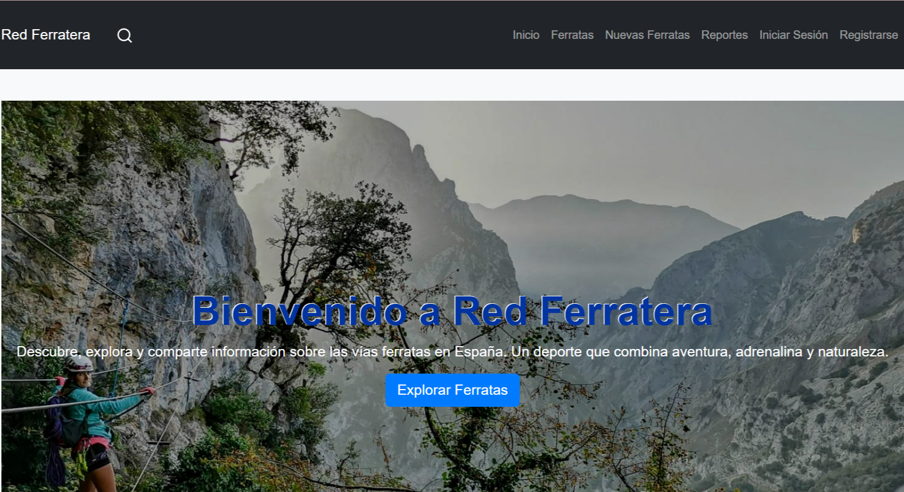

Desarrolladora de aplicaciones web | Apasionada por la lógica y el diseño
Ver mis proyectosSoy Técnica Superior en Desarrollo de Aplicaciones Web. Me fascina la lógica detrás del código, resolver problemas paso a paso con rigor y crear aplicaciones funcionales, cuidadas y eficientes 💜. A lo largo de mi formación y experiencia profesional he trabajado tanto en el desarrollo de aplicaciones web a medida (como mi proyecto TFG RedFerratera) como en la gestión, auditoría e integración técnica de entornos e-learning complejos (plataformas LMS en Moodle, parametrización de bases de datos, control de calidad y automatización de contenidos multimedia). Me defino como una persona organizada, perfeccionista, con gran capacidad de aprendizaje rápido y con muchas ganas de seguir creciendo en equipos técnicos dinámicos. En este portafolio encontrarás mi proyecto final de ciclo: Red Ferratera.

Aplicación web completa para la consulta y gestión de vías ferratas en España.
Auditoría técnica, integración y control de calidad de los módulos formativos en Moodle.
¿Quieres que hablemos o tienes una propuesta en la que pueda encajar? ¡Escríbeme! megidorico@gmail.com
O visita mi LinkedIn